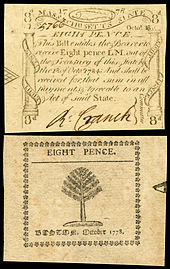
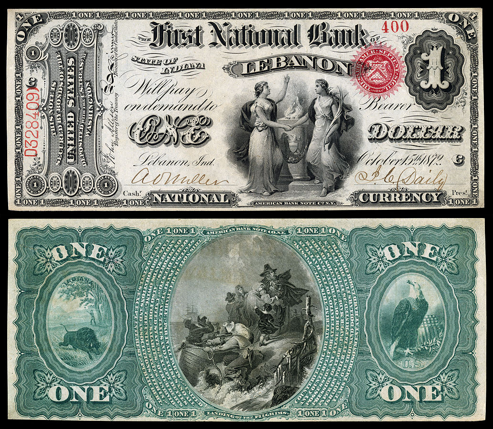
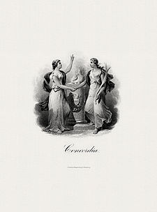
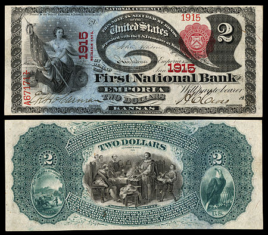
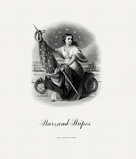
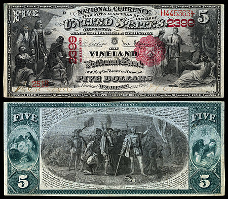
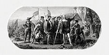

Engraving and printing early American banknotes

The first issue of government-authorized paper currency in America was printed by the Province of Massachusetts Bay in 1690.[1] This first issue, dated 10 December 1690, was printed from an engraved copper plate with four subjects to a sheet.[2] The first engraver identified in archival records was John Coney who appears to have been paid 30£ on 12 March 1703[3] to engrave three copper plates for the Massachusetts issue dated 21 November 1702.[4] Given the many design similarities between the 1690 note and those engraved by Coney in 1702, there has been speculation that he may have engraved the earlier note. If true, he would be the first American to engrave on copper plates.[5] Several historical figures with a background in engraving and printing were involved in the production of early American currency.
Benjamin Franklin began printing Province of Pennsylvania notes in 1729,[6] took on a partner (David Hall) in 1749,[7] and then left the currency printing business after the 1764 issue.[8] Paul Revere both engraved and printed bank notes[9][10] for the Province and then the state of Massachusetts between 1775 and 1779,[11] and the Province of New Hampshire in 1775.[12] Revere's father, Apollos Rivoire, was John Coney's pupil.[13] David Rittenhouse engraved some border designs for the 10 May 1775 Continental currency[14] and 25 March 1776 Colony of New Jersey 6£ note.[15] Francis Hopkinson does not appear to have done engraving, but he is credited with the designs for border-cuts, emblems, and mottos on three issues of Continental currency in 1778–1779.[16]
Engraving and printing at the U.S. Treasury
The first series of Federally-issued United States banknotes was authorized by Congressional acts on 17 July 1861 (12 Stat. 259) and 5 August 1861 (12 Stat. 313). While the Demand Notes were issued from the United States Treasury, they were engraved and printed elsewhere. In 1861, in fact until the mid-1870s, the Treasury Department lacked the facilities or infrastructure to engrave and print the bulk of it financial paper and therefore relied on external contracts with private bank note companies. By means of a Congressional act dated 11 July 1862 (12 Stat. 532), the Secretary of the Treasury received authorization to purchase machinery and employ the staff necessary to manufacture currency at the Treasury. It was not until 1877 (19 Stat. 353) that the Bureau of Engraving and Printing was given funding for labor, paper, transportation, and other expenses with the provision that all work be conducted on site, and for a price commensurate with that of the private bank note companies. On 1 October 1877, the BEP took over the production of both United States Note and National Bank Note production.[17]
National Bank Notes
“TO ARTISTS, ENGRAVERS AND OTHERS – Designs for National Currency Notes are hereby invited, of the denominations of $5, $10, $20, $50, $100, $500 and $1,000, to be issued under the Act of Congress authorizing a National Currency, approved 25 February 1863”.[18] Salmon Chase, Secretary of the Treasury, placed this classified notice in late March, 1863. Other than describe some of the required features of each note (e.g., legal wording, placement of Treasury signatures, etc.), the only direction given to prospective applicants was that submissions must be original (i.e., they cannot have ever been illustrated on U.S. currency) and that "the designs must be national in their character".[18] It is uncertain how many proposals were submitted, or what was involved in the selection process, but the final decision was to draw heavily on the use of historic American images which adorn the Capitol Rotunda. [nb 1] The motivation for this selection was two-fold: educationally it would circulate images depicting important scenes from American history while at the same time enhancing the security of the note by involving highly complex engravings.[20]
By July 1863, contracts were signed with American Bank Note Company (ABNCo) and Continental Bank Note Company (CBNCo) (which would later be absorbed by ABNCo) to design, engrave, and begin printing National Bank Notes.[21] ABNCo was contracted for the $20, $50, and $100 denominations,[22] CBNCo was contracted for the $5 and $10 denominations,[23] and National Bank Note Company contracted for the designs for the $2, $500, and $1,000 denominations.[24] The contract descriptions addresses each denomination individually and specifies which image from the Capitol Rotunda should be used for the reverse and what type of vignettes should be on the obverse (with specific names). [nb 2]
The first National Bank Notes were issued on 21 December 1863.[17]
Denomination set of first issue/design National Bank Notes
| Banknote | Value/series | Vignette | Vignette information |
|---|---|---|---|
|  | $1 Original Series The First National Bank Lebanon, Indiana Pres John C. Daily Cash Abram O. Miller |
 | Concordia |
|  | $2 Series 1875 The First National Bank Emporia, Kansas Pres Harrison Cory Cross Cash Elliott Raper Holderman |
 | Stars and Stripes |
|  | $5 Series 1875 The Vineland National Bank Vineland, New Jersey Pres Horatio N. Greene Cash Willis T. Virgil |
 | Landing of Columbus |